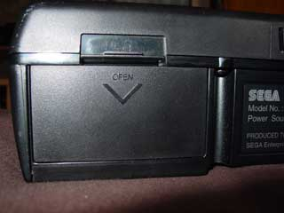
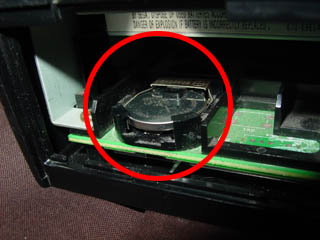
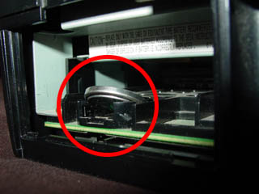
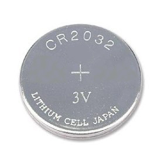

Saturn - Não salva mais
 :::. Por Gigacom
- Um problema bastante recorrente no Saturn é quando ele passa a
não salvar mais jogo algum, assim como as
configurações de lingua, data e hora, fazendo com que o
console, toda vez que é ligado, fique pedindo para o
usuário reconfigurar tudo isso. É um problema super
simples de se resolver. A causa é uma bateria encaixada no
console, que quando perde a sua energia, obviamente deixa de suprir a
energia nescessária para a memória da BIOS e RAM onde
é gravada os saves dos jogos. Essa bateria fica em um
compartimento na parte traseira do console, protegido por uma tampa.
:::. Por Gigacom
- Um problema bastante recorrente no Saturn é quando ele passa a
não salvar mais jogo algum, assim como as
configurações de lingua, data e hora, fazendo com que o
console, toda vez que é ligado, fique pedindo para o
usuário reconfigurar tudo isso. É um problema super
simples de se resolver. A causa é uma bateria encaixada no
console, que quando perde a sua energia, obviamente deixa de suprir a
energia nescessária para a memória da BIOS e RAM onde
é gravada os saves dos jogos. Essa bateria fica em um
compartimento na parte traseira do console, protegido por uma tampa.

Para remover a bateria, apenas empurre-a para dentro que ela soltara facilmente (há uma "mola" pressionando-a para que fique presa em umas travinhas). Após removê-la basta substituí-la por uma outra bateria do tipo CR-2032, a mesma utilizada em placa mãe de computadores. Essa bateria é barata e muito fácil de encontrar em qualquer lugar.

Essa bateria dura uns bons meses, chegando não raro a sobreviver por até um ano. Se você tambesm estiver desconfiado de que essa bateria esteja perto do fim da vida dela, e não quiser perder os save games, você pode fazer a troca dela com o console ligado. Explico: se com o video game desligado você remover essa bateria, os saves e as configurações da BIOS vão automaticamente pro espaço! MAS, quando o console está ligado, essa bateria fica em stand-by, e a memória tanto RAM onde é salva essas configurações e os saves passa a ser alimentada pela energia corrente do console. Daí, se você substituir a bateria com o console ligado, não haverá perda de dados. Não se preocupe tambem com aquelas historias de curto circuito, explosão, aparição de alma penada... ISSO NÃO PROVOCA ABSOLUTAMENTE PROBLEMA ALGUM NO SATURN! Apenas faça o processo com cuidado para não tirar o cabo de enrgia enquanto troca a bateria, que não acontecerá problema algum.